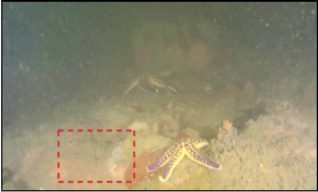
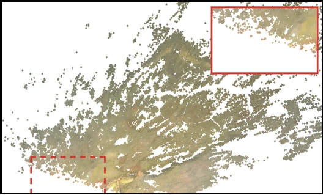

SPUME: Surface-Persistence Modeling for Transient-Resistant Underwater Multi-View Reconstruction
SPUME models whether provisional surfaces remain supported across underwater views, then uses that evidence to refine geometry while preserving reliable backbone predictions.
Abstract
Feed-forward underwater multi-view reconstruction can encode particles, caustics, scattering changes, and temporary occlusions as persistent 3D structure. This transient geometry imprinting exposes three problems: image-space signals do not directly reveal whether a predicted 3D surface is supported across views; point, depth, feature, normal, and temporal cues have incompatible scales; and detecting weak support does not specify how geometry should be corrected without damaging reliable predictions.
We propose SPUME (Surface-Persistence-guided Underwater Multi-view Estimation). SPUME treats every backbone-predicted 3D point as a surface anchor and evaluates its cross-view consistency. Five complementary cues are robustly normalized and fused into a Surface-Support Deficit Field (SSDF), which conditions a bounded log-depth refiner while the backbone, camera estimates, and pixel rays remain fixed.
Methodology
SPUME organizes cross-view evidence around predicted 3D surfaces. Point, depth, feature, normal, and multi-view support cues form SSDF; the resulting signal guides a bounded, identity-initialized depth correction.
Transient-resistant Reconstruction
Drag across each scene to reveal the underwater observation and its SPUME reconstruction.


Observation SPUMESurface-Support Deficit Field
Median/MAD normalization places heterogeneous cues on a comparable, window-relative scale. Their fusion highlights predicted surfaces with unusually weak cross-view support.